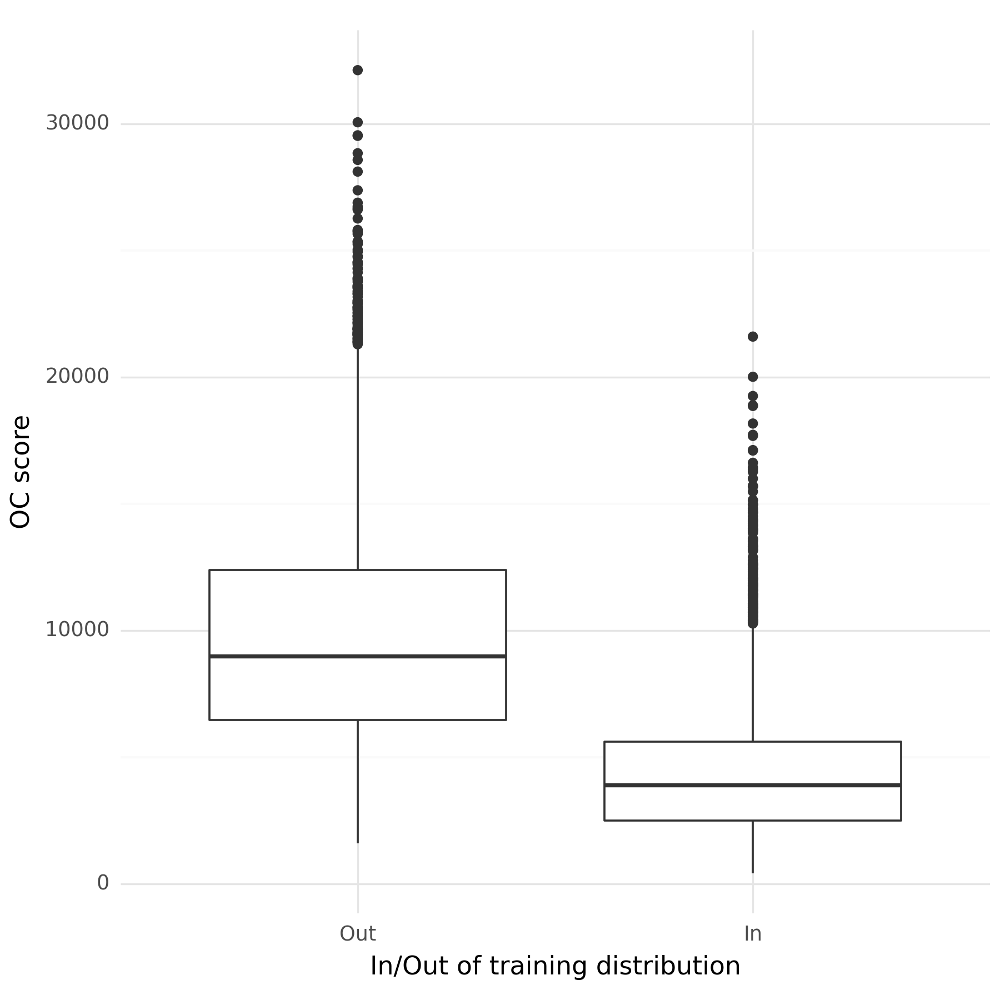

AANN 28/03/2024
Table of Contents
Orthonormal certificates for epistemic uncertainty
Given neural networks can have questionable ability to extrapolate beyond the distribution of data they were trained on, we need tools to detect such situations. In this example we will use the orthonormal certificates (OCs) as proposed by Tagasovska and Lopez-Paz (2019) to detect samples that are out-of-distribution from our training data.
Overview
As an example, we will consider the same CNN network used for MNIST classification in this previous post. However, this time we will only train on samples corresponding to the digits 0–4. The digits 5–9 will be considered as out-of-distribution samples. We will use the OCs to assign scores to samples based on our confidence that they are in or out of the training distribution.
The idea here is that you have a certificate, \(C_{i}\in\mathbb{R}^{h}\), such that \(C_{i}w = 0\) if \(w\) is a sample from our training distribution and \(C_{i}w > 0\) if \(w\) is from some other distribution. However, there are a lot of distributions that aren't our training distribution, so we consider a collection of certificates and stack them to make a matrix \(C\). The goal is then to get a diverse set of certificates (i.e. they are orthogonal to each other) that also map the training data to zero, (i.e. they are orthogonal to our training data).
The OCs require the samples to be represented as a vector (rather than an image) so we will the CNN backbone from the classifier to generate an embedding of the image.1
The full script with all the code is here.
Modules
CNN classifier
The network for the classifier is pretty much the same the one used in
previous posts, however we have added a backbone method so we can
get the output of the CNN without the additional FFN layers. This is
helpful because we will use this as an embedding of the images for our
OCs
class DemoCNN(nn.Module): def __init__(self): super(DemoCNN, self).__init__() self._conv1 = nn.Conv2d(1, 6, kernel_size=5, padding=2) self._pool1 = nn.AvgPool2d(2) self._conv2 = nn.Conv2d(6, 16, kernel_size=5, padding=0) self._pool2 = nn.AvgPool2d(2) self._fc1 = nn.Linear(5 * 5 * 16, 84) self._fc2 = nn.Linear(84, 10) self._relu = nn.ReLU() def backbone(self, x): x = self._pool1(self._relu(self._conv1(x))) x = self._pool2(self._relu(self._conv2(x))) x = x.view(-1, 5 * 5 * 16) return x def forward(self, x): x = self.backbone(x) x = self._relu(self._fc1(x)) x = self._fc2(x) return x
Orthonormal certificates
Each individual certificate is a row of the _certificates matrix,
\(C\in\mathbb{R}^{h\times k}\), where there are \(k\) certificates and
we are dealing with \(h\)-dimensional observations. The forward
method simply multiples this matrix against the input, to get
\(C^{T}\phi(x)\), where \(\phi(x)\) just means the embedding of some
sample \(x\) into \(\mathbb{R}^{h}\). In our case this is the CNN
backbone of the trained classifier.
class OrthonormalCertificates(nn.Module): def __init__(self, dim_in, num_certificates): super(OrthonormalCertificates, self).__init__() self._dim_in = dim_in self._num_certificates = num_certificates self._certificates = nn.Parameter( torch.randn(self._dim_in, self._num_certificates) ) def forward(self, x): # Permute the dimensions of x to vectorise over a batch return torch.matmul(self._certificates.t(), x.permute((1, 0))) def ctc(self): return torch.matmul(self._certificates.t(), self._certificates) def get_num_certificates(self): return self._num_certificates
The use of permute in the forward method is to ensure this will
vectorize over a batch of samples. There is a ctc method which
returns \(C^{T}C\) which we will need as part of the regularisation
term in the loss function.
Training and loss function
Training the CNN-based classifier is pretty standard so I won't go into detail here.
To instantiate the OC object we need to specify the dimensionality of the vectors returned by the CNN backbone (\(5\times5\times16 = 400\)) and the number of certificates.
The loss function for the OCs is
\[ \frac{1}{n}\sum_{i=1}^{n}\ell_{C}(C^{T}\phi(x_{i}),\mathbf{0}) + \lambda \cdot \| C^{T}C - \mathbf{I}_{k} \| \]
where \(\ell_{C}\) is some arbitrary loss function, (we will use the
MSE below), \(\phi(x_{i})\) is used to indicate the embedding of the
image by the CNN backbone, and \(\lambda\) is a regularisation
constant. In the training loop, we get the CNN embedded images with
the backbone method from the trained DemoCNN instance.
num_certificates = 1000 oc_model = OrthonormalCertificates(5 * 5 * 16, num_certificates) oc_optimizer = optim.Adam(oc_model.parameters(), lr=1e-3) oc_model.train() oc_loss_history = [] for epoch in range(oc_training_epochs): epoch_cumloss = 0 for images, label in train_dataloader: images = images.unsqueeze(1) bbs = model.backbone(images) oc_loss = torch.mean(torch.square(oc_model(bbs))) reg_loss = torch.mean( torch.square(oc_model.ctc() - torch.eye(num_certificates)) ) loss = oc_loss + 1e-2 * reg_loss epoch_cumloss += loss.item() oc_optimizer.zero_grad() loss.backward() oc_optimizer.step() print(f"Epoch {epoch} loss: {epoch_cumloss}") oc_loss_history.append((epoch, epoch_cumloss))
Results
We wouldn't expect this process to have impacted on the performance of the CNN classifier, but it is nice to see on the test set it is still getting \(>99\%\) accuracy.
Figure 1 shows the scores of samples from the test set based on whether they correspond to digits within the training data (digits 0–4) or those from outside (digits 5–9). The ROC AUC2 for these scores is 0.88. This ROC AUC isn't as high as what I had expected given the results in the paper, but it seems like a reasonable starting point for very little tuning.

Figure 1: The trained orthonormal certificates distinguish between samples from within the training distribution (the digits 0–4) and those from outside of the training distribution (5–9).
Discussion
In this example we have demonstrated how you can use orthonormal certificates to assign a score to new data related to how similar it is to the data seen during training. This is important because neural networks do not always extrapolate well beyond their training data, and we want to be warned of this situation. It remains to see how a threshold could be determined for when we are actually in this situation. Choosing a threshold probably depends heavily on the use case though.
Footnotes:
By "backbone" I mean the output of the convolutional layers and by "embedding" I mean a (possibly high-dimensional) vector representation of the image.
The area under the curve (AUC) where the curve in question is the receiver operating characteristic (ROC) curve.